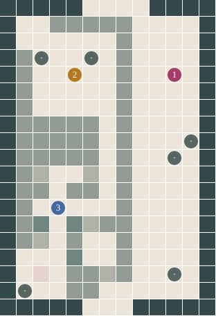

What will the
next row do?
A little noise, and a surface begins to stir. Keep that pleasure. Now give its parts a way to participate in what happens next.
Try one generation
Read left, self and right. Make a prediction, then STEP. The newest row stays at the top; the past moves down.
32 cells across · 24 retained rows · the two ends wrap together. The pink mark selects the cell; yellow marks identify its neighbours. Blank history has no earlier generation.
Inspect all eight answers in this rule
Three binary inputs select one of eight stored output bits. The highlighted entry is the witness's current neighbourhood.
This is an independent JavaScript exercise using the same elementary update rule and the proposed study's dimensions. It is not a recording of Godot or a test of VR controls.

Beyond the first organic gesture
The blob can signify the queer and give pleasure. Its ease of application can also become a mental algorithmic wall: different objects inherit a familiar gesture before we discover what else they could become.
Cellular automata adds stored state, neighbours and an update rule to our toolbox. Noise can remain an input. The next body has further relationships available to it.
What would we have to learn to let it become something else?
Three encounters, nine works retained

1 · The row
The existing rule explorer gains a desk, STEP/RUN/SEED/CELL controls and a mounted neighbourhood readout. A second seed changes the beginning while keeping the rule. RESET now clears every visible history row.
2 · The rug
The existing rug combines a two-dimensional multistate automaton with two regional rulesets and a mirror imposed after every generation. Its floor plane is raised above the deck. Its symmetry is a deliberate part of the program.
3 · The network
Growth stores occupied positions; drawing chooses neighbour connections afterwards. A visible line suggests ancestry, but its chosen parent is not a complete birth record. The network's twenty-update growth limit belongs in the reading too.
The orb, synthesis stand, substrate runner, turmite swarm, Rule 110 display and showcase remain. Their further development stays visible in the backlog; the introductory question does not erase the collection.
Read the book passage
What will the next row do?
The rug is already changing. Across the room, a small board holds one green cell and waits. Two ways of making a pattern occupy the same hall. Begin with the one that has left you time to answer.
We have carried noise a long way: across a sheet, into a volume, around the body and under a foot. A little variation can satisfy the first wish for something organic. Its ease is part of its power. It can also make that first answer so familiar that other possible forms remain in its shadow. Keep the pleasure of the blob. Bring an unfinished question with it.
Find the board near the entrance side of the hall. The newest row sits along its far edge; the rest of the board is room for a past. Three small marks pick out a cell and its two neighbours. Read their states on the side plate, but leave NEXT for a moment. What would you make from these three?
Press STEP. One generation arrives, and the previous row moves towards you. The pink mark stays at the same address. Its state may change. The plate now reads this new generation and predicts the one that could follow it. We have advanced the local machine; the rug has kept its own time.
Begin with Rule 90 and the single seed. STEP once, then again. Follow one of the diagonal edges. Choose CELL to move the witness along the current row, and check a neighbourhood inside the pattern as well as one at its edge. Counting the green cells is tempting. Keep their order too: left, self, right.
The explorer consults its rule through these actual lines:
func _apply_rule(left: bool, center: bool, right: bool) -> bool:
var neighborhood = (int(left) << 2) | (int(center) << 1) | int(right)
return (rule >> neighborhood) & 1 == 1
Three on/off states make eight possible arrangements. The shifts place them into an index from zero to seven. The rule number stores eight answers, one bit for each arrangement. Reading the selected bit gives this cell's next state.
For Rule 90, compare 100 with 010. Each contains one occupied cell. The answers differ. A count would have discarded a relation that this rule uses. A neighbourhood is already a decision about what information may matter.
Choose Rule 30 and keep the single seed. Its rows quickly become harder to anticipate by eye. The board still asks the same small question at every position. A more tangled picture has not made the instruction longer. RUN lets the generations arrive automatically; pressing it again holds them, and STEP always leaves this study held after one update.
The update writes a separate row. Here is the loop inside _advance, followed by the moment the new row becomes current:
for i in range(cells_x):
var left = _current_row[(i - 1 + cells_x) % cells_x]
var center = _current_row[i]
var right = _current_row[(i + 1) % cells_x]
new_row[i] = _apply_rule(left, center, right)
_current_row = new_row
All the questions go to the old row. An answer written at the left cannot slip into the question being asked at the right. This installation makes that separation part of its rule. A different update order would be another experiment to specify.
Press SEED. Two adjacent cells now occupy the starting row. The rule has stayed where you left it. Advance again and compare what happens where their consequences meet. Changing the beginning explores something that changing the rule alone could leave unseen. RST returns to the selected beginning and clears the visible history.
Keep stepping until a pattern reaches the boundary. The witness can cross it too: after cell 31 comes cell 0. The modulo operations in the loop join the two ends. What looks like a line on the desk is a ring to the calculation. Twenty-four rows fit on this board; older rows leave the display while their consequences remain in the current state. Once again, the visible past is smaller than the past that brought us here.
Now approach the rug. A detail in one quarter has partners across the cloth. Find them before naming the symmetry. The pink border and golden interior are another division to follow. Both can change, but they do not consult identical conditions.
This work has a two-dimensional grid, several states and two sets of local rules. The border and interior decide differently when activity begins, continues or fades. After calculating a generation, the program also mirrors one quarter into the others. In _enforce_quadrant, one value is written into three reflected positions (comments between these assignments are omitted):
grid[row_offset + (width - 1 - x)] = val
grid[mirror_row_offset + x] = val
grid[mirror_row_offset + (width - 1 - x)] = val
The ornament has several makers: local updates, a chosen boundary, a palette, and this repeated act of copying. The mirror remains at work after the first seed. Knowing that can give us another way to enjoy the rug. We can follow a changing detail while noticing the procedure that makes its companions answer together.
The title invites an association with a textile tradition. These few operations do not account for that tradition, its materials or its makers. They produce this particular computational cloth. Its source offers other stencils and divisions to investigate later; the rug in this hall uses the mirrored quarters and frame.
Further along, the line network gives the cell another body. Occupied positions are joined by coloured segments. Move around it and let one apparent knot separate into lines at different depths. Some space that looked full can open when your viewpoint changes.
Its growth begins with a random walk. During a bounded burst of updates, occupied frontier positions may add a nearby cell. The drawing then chooses a recorded neighbour to connect to each newly encountered position. There is a detail worth keeping: the parent in the drawing is selected during the scan. The line does not prove which earlier cell caused the birth.
This is another construction of an organic form. Chance proposes an addition; stored occupancy constrains where it can occur; the renderer supplies connections and colour. The work may already have finished its twenty growth updates when you reach it. A still network can be the consequence of that programmed limit. Stillness alone cannot tell us that growth exhausted every possibility.
We can begin to distinguish forms by the relations that sustain them. The board keeps a row and repeatedly rewrites it. The rug combines local activity with an imposed symmetry. The network retains occupied positions and draws a selected account of their connections. Their resemblance to living things can invite us closer; the code gives us further differences to explore.
The other works remain in the room: agents painting a shared surface, a Rule 110 display, the showcase and the orb. Let them offer further directions without asking this first encounter to explain them all.
For now, carry three choices: what a cell can hold, which neighbours it can consult, and when its answer becomes available to others. Our next comparison, the structure-growth specimen, makes the neighbourhood three-dimensional and gives disappearance more than one state. What forms need a little longer to go away?
Read the critical thread
The next form needs another relation
A little noise can meet an immediate desire for an organic body. The swelling or dissolving form can signify the queer; its pleasure belongs in the research. Palle's blob-culture question concerns what happens when this easy, useful operation becomes a horizon for invention. Different objects begin to resemble the same gesture of becoming. Whether wider visual culture is saturated with that gesture needs examples and investigation; the museum can begin with its own collection.
Cellular automata adds a capability: a stored configuration participates in producing its successor. That addition extends the question of what bodies are possible. It does not establish a hierarchy in which a stateful system is more alive, more queer or more valuable than a sampled field. The significance depends on what someone wants to make and what the implemented relationships allow.
The first board gives each cell two states, two adjacent neighbours and one shared rule. The witness makes that agreement inspectable. Rule 90 treats 100 differently from 010, though both contain one occupied cell. Ordered relations matter here. Another rule might discard precisely that distinction. The choice of information is material to the body that can persist.
The desk also stages time: it retains twenty-four rows while continuing beyond them. Its current row carries consequences whose earlier marks have disappeared from the display. A bounded memory helps us begin studying. It also determines how far back we can inspect a particular consequence without replaying the experiment.
The rug complicates any easy account of decentralised order. The frame and interior consult different rules, and a copying operation makes three quarters agree with the first. Its ornament is both locally computed and globally arranged. Naming these decisions does not diminish the pleasure of following a motif. It gives us handles for making another cloth. The computational rug also cannot stand in for the history, labour and material practices invoked by its title.
The network adds another selection. Its renderer records a neighbour as parent after growth has occurred. A line can suggest ancestry more confidently than the procedure has recorded it. The source helps separate an attractive account of relation from the particular event it appears to explain.
Our critical inquiry stays inside those choices. Which relations can this body express? What would require a new state, a different neighbourhood or a different substrate? The familiar blob remains welcome. Learning continues because its first answer leaves other forms to discover.
Implementation and remaining checks
The row, the rug and the network
Builds on arrays, binary state, bounded history, random initial conditions and sampled noise fields. Prepares for the 26-neighbour multistate specimen in CA_ElementaryRules. The historical room title is retained; the next specimen does not enumerate the 256 elementary rules.
Elementary row
Source: commons/artifacts/ca_rule_explorer/ca_rule_explorer.gd. The optional study:neighbours placement uses 32 Boolean cells, 24 history rows, a 1.6 m board, Rule 90 and a held initial state. Unconfigured instances retain their 64-cell, 50-row, 1 m defaults and keyboard controls.
The three bits index one of eight outputs stored in the rule integer. There are 256 possible assignments of these eight output bits.
func _apply_rule(left: bool, center: bool, right: bool) -> bool:
var neighborhood = (int(left) << 2) | (int(center) << 1) | int(right)
return (rule >> neighborhood) & 1 == 1
The exact update retains a bounded display history, newest row first:
func _advance() -> void:
var new_row: Array[bool] = []
new_row.resize(cells_x)
for i in range(cells_x):
var left = _current_row[(i - 1 + cells_x) % cells_x]
var center = _current_row[i]
var right = _current_row[(i + 1) % cells_x]
new_row[i] = _apply_rule(left, center, right)
_current_row = new_row
generation += 1
_grid.push_front(new_row.duplicate())
while _grid.size() > rows_visible:
_grid.pop_back()
_update_display()
All neighbour reads use the old row. This is synchronous state updating implemented with a sequential loop and a separate output array. Parallel hardware is not required. Modulo wraps the ends. The visible rectangular history is not a 2D spatial automaton: one axis is cell index, the other is recorded time.
The study begins with one seed, or two adjacent seeds after SEED. Rule changes and RST reset to the selected seed; SEED and STEP hold the study. RUN toggles automatic updates. CELL advances the inspected index with wrapping. The readout predicts the next generation from the currently displayed row; after STEP it updates to predict the following generation. Its three marks do not replace the original on/off colours.
The shared reset repair clears unused MultiMesh rows and the partial clock interval. Without clearing the unused rows, an old pattern remained visible underneath a new seed. A generation counter counts advances since the most recent reset, independently of the number of retained history rows.
Rug
Source: algorithms/cellularautomata/persian_rug/persian_rug.gd. A 256 by 384 PackedByteArray grid has wrapped eight-neighbour reads, distinct border/interior birth and survival lists, and four/five-state decay respectively. The active value used for neighbour comparison is selected by the receiving cell's region. No uniform-rule claim spans the frame and field.
After swapping buffers, _enforce_symmetry() calls _enforce_quadrant() for the configured default. Thus four-fold symmetry is actively imposed after every generation. Texture rows are uploaded incrementally; the display can briefly contain rows from different upload stages even though the state calculation uses buffers. The map retains the full-size flat rug and raises its plane to .025 m above the museum deck.
Line network
Sources: algorithms/cellularautomata/ca_showcase/LineNetworkCA.gd and base_ca.gd. A 64-cubed occupancy grid starts with a bounded random walk. Growth attempts append cells to a persistent frontier; occupancy is changed while the frontier is scanned, so duplicate proposals in that scan can see prior writes. The visualizer selects a recorded adjacent position as a parent after the growth update. That record is a drawing choice, not a causal birth log. Growth attempts stop after twenty update frames. The base loop continues visualization scans afterwards; this is a remaining performance/restart review target.
Placement and verification
All nine authored placements remain, and all structure/utility cells remain. The explorer moves from (10,12) to (10,4), rotates 180 degrees toward entry and rises 1.04 m onto local study furniture. The rug stays at (4,4). The museum placement row is regenerated from the current map. The converter still maps authored numeric tiers 3/4/5 to tile 4; distinct-height recovery remains a spatial review item.
GDScript grammar and data/source consistency can be checked without launching Godot. The prepared in-engine probe checks actual multimesh reset, rule updates, witness predictions, local ownership and desktop pointer actions. Its run status belongs in field_notes.md and the illustrated review. Source preparation is not a completed VR test.